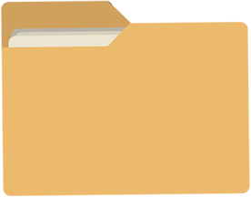
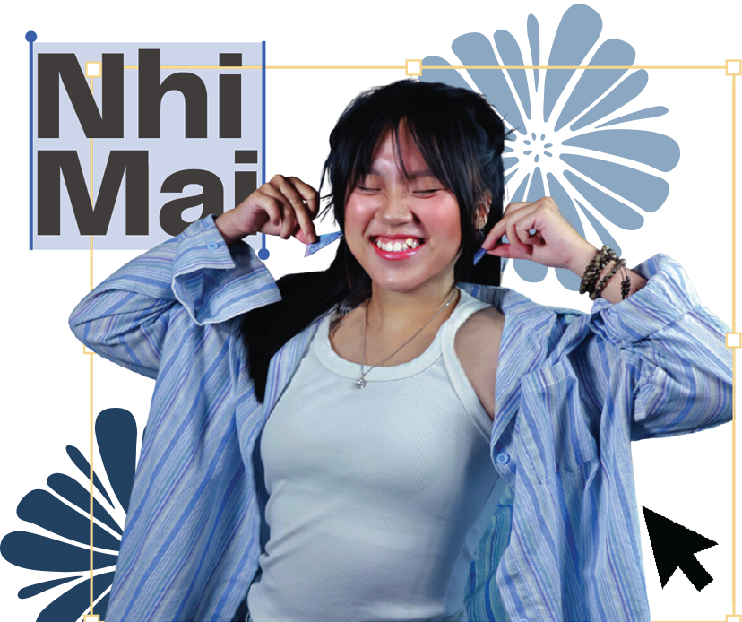

I am a curious and driven individual with a passion for data-driven insights and creative design. I aim to understand user needs and translate them into meaningful, intuitive, and impactful experiences through thoughtful design.
I am majoring in Graphic Design with a minor in UX/UI, supported by a foundation in Business Analytics and active leadership experience in student organizations.

I have gained hands-on experience across design, content creation, and leadership roles. I completed an internship at the Vietnam International Institute of Sport (VIIS), contributing as a content creator and graphic designer for the Vietnam International Table Tennis Academy (VITTA), and as a video editor for LaLiga Academy Vietnam. Alongside my professional experience, I have held leadership positions in student and nonprofit organizations, including Head of Design at Improve English and YE-MUN. I have also contributed to various organizations as a graphic designer, social media coordinator, content creator, and HR team member, reflecting my interdisciplinary interests and adaptability